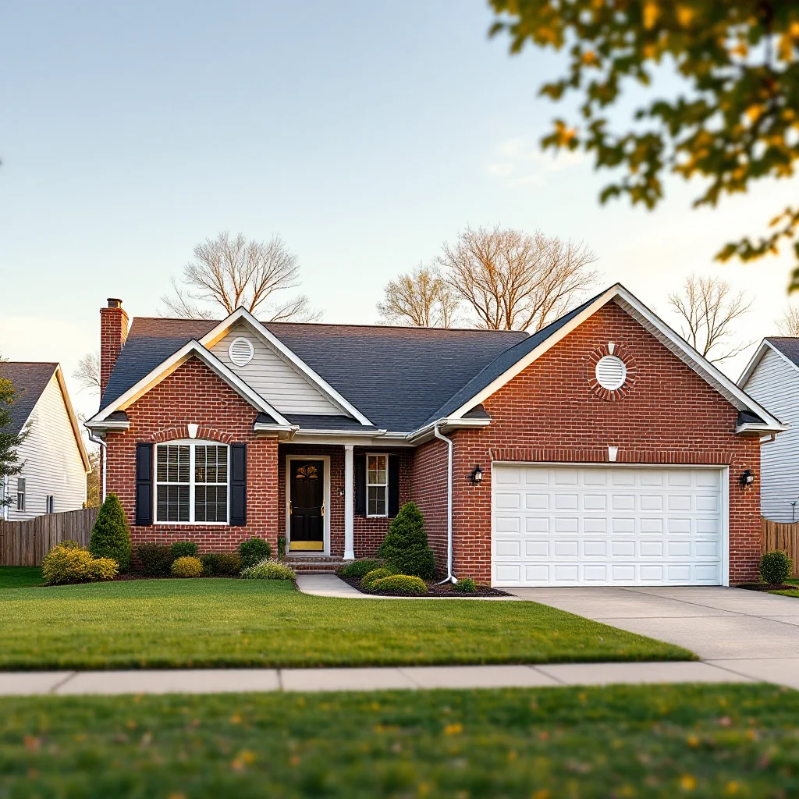

Pressure Washing in West Knoxville, TN

West Knoxville Pressure Washing
West Knoxville stretches from the Cedar Bluff corridor through Rocky Hill, Ebenezer Road, and the Turkey Creek shopping district — encompassing some of Knox County's most popular residential neighborhoods and busiest commercial areas. The mix of 1980s-2000s suburban homes, newer developments, and heavy commercial traffic creates a range of exterior cleaning needs.
We're the go-to pressure washing team for West Knoxville homeowners who want their driveways, siding, and outdoor living spaces clean without damaging sensitive surfaces.
West Knoxville Services
- House washing — Vinyl, brick, and stone homes throughout West Knox
- Driveway & garage floor cleaning — Remove oil, tire marks, and organic stains
- Deck & patio cleaning — Composite and wood deck restoration
- Fence cleaning — HOA-compliant results
- Roof cleaning — Shingle and metal roofs
- Commercial — Shopping centers, office parks, restaurants
HOA-Ready Results
Many West Knoxville subdivisions have HOA requirements for exterior maintenance. We've worked with homeowners in Lyons Crossing, Hardin Valley, Wellington Chase, and other HOA communities to meet (or exceed) their standards. If you've received a notice about exterior appearance, we can usually have your property cleaned within a few days of your call.
Coverage
We serve all of West Knoxville including Cedar Bluff, Rocky Hill, Ebenezer, Northshore, Turkey Creek, Lovell Road corridor, Hardin Valley, and the communities along Kingston Pike and Pellissippi Parkway.